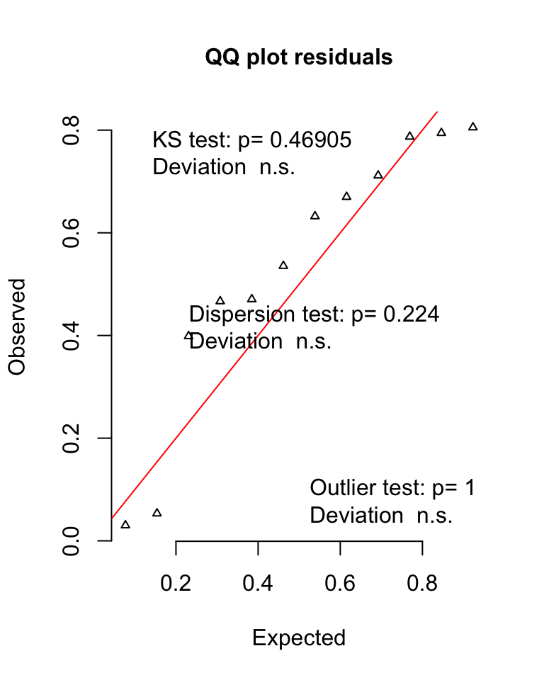
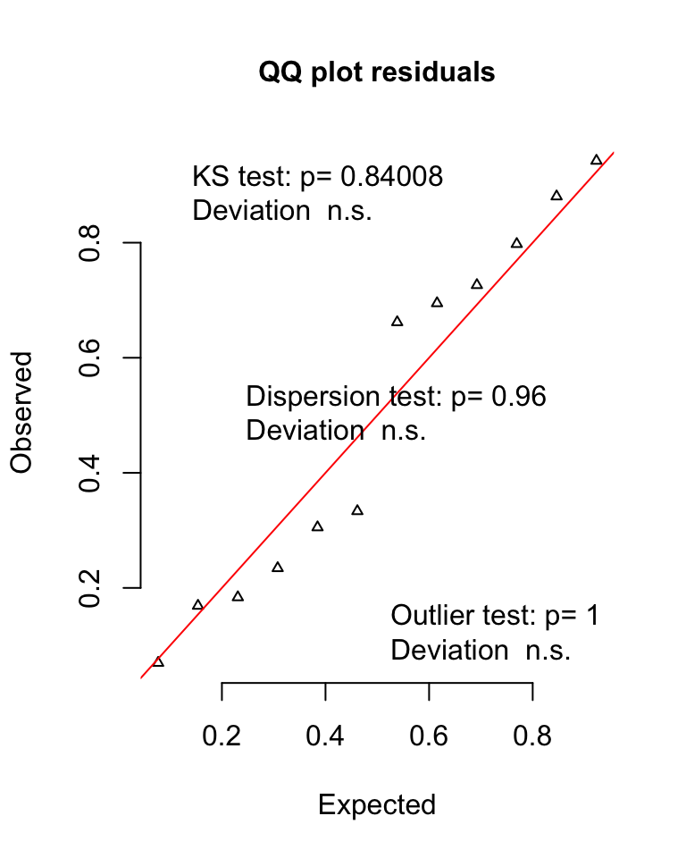
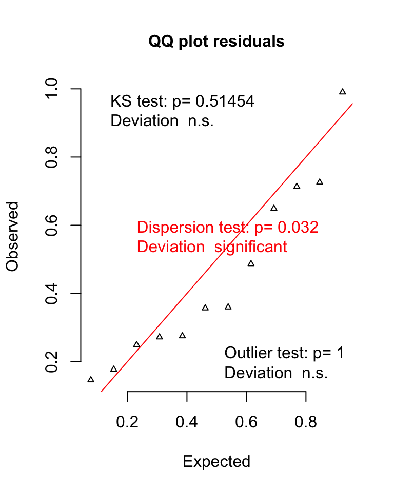
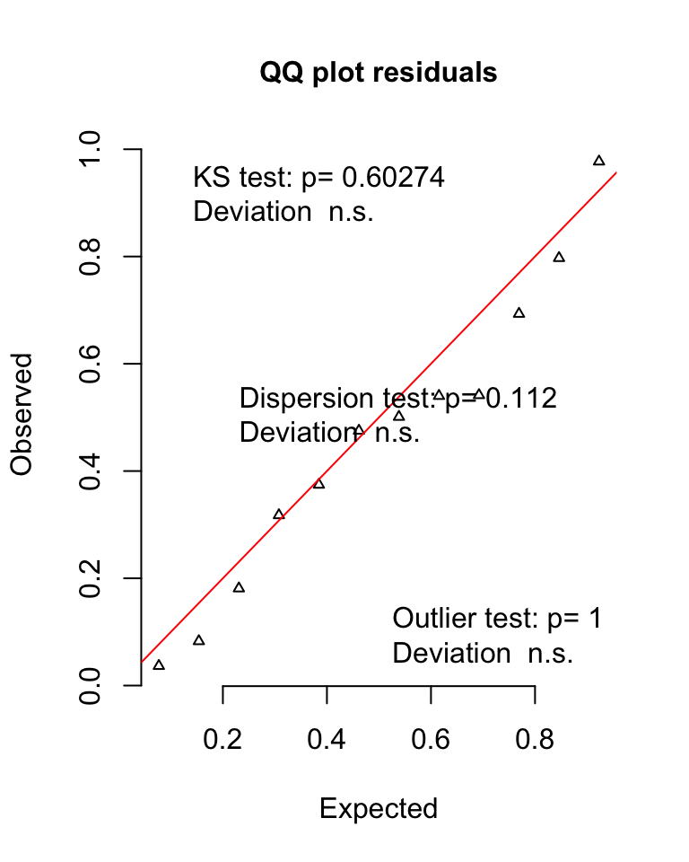

Dryas high and low performers
Remove individuals who did not achieve greater than 50% correct responses in last 2 days of training
data4 = data3 %>% group_by(id) %>% filter(all(prop.correct.training.last.2 > 0.5))Initial preference
High Performers
Model
Do individuals who perform well in last 2 days of training shift preference initially
naive.model.high.performers =
glmer(cbind(n.morning.colour.initial, n.afternoon.colour.initial) ~
time.of.day + (1 |id),
data= data4, family = binomial)Results
| term | estimate | std.error | statistic | p.value |
|---|---|---|---|---|
| (Intercept) | -0.546 | 0.466 | -1.172 | 0.241 |
| time.of.day2afternoon | 0.536 | 0.321 | 1.670 | 0.095 |
no p = 0.09
Model Residuals

# pull out individuals below criterion
data5 = data3 %>% group_by(id) %>% filter(any(prop.correct.training.last.2 < 0.51))Model
Do individuals who were not correct at high rate shift preference initially
naive.model.low.performers =
glmer(cbind(n.morning.colour.initial, n.afternoon.colour.initial) ~
time.of.day + (1 | id),
data =data5, family = binomial)Results
| term | estimate | std.error | statistic | p.value |
|---|---|---|---|---|
| (Intercept) | 1.333 | 0.496 | 2.687 | 0.007 |
| time.of.day2afternoon | 0.148 | 0.339 | 0.437 | 0.662 |
no p = 0.66
Model Residuals

Trained preference
High Performers
Model
Do individuals who were correct at a high rate shift preference when trained?
trained.model.high.performers =
glmer(cbind(n.morning.colour.test, n.afternoon.colour.test) ~
time.of.day + (1 | id),
data= data4, family = binomial)Results
| term | estimate | std.error | statistic | p.value |
|---|---|---|---|---|
| (Intercept) | 1.435 | 0.398 | 3.604 | < .001 |
| time.of.day2afternoon | -1.819 | 0.195 | -9.334 | < .001 |
Yses p < 0.001

Figure 3: Data from colour preference trials of D. iulia meeting the training criterion. (A) Naïve preferences in the morning and afternoon. (B) Preferences of butterflies from (A) post-training. Grey lines connect individuals. Data are means ± 95% CI
Model Residuals

There’s a slight deviation due to the outlier which increases the variance in the trained afternoon session as seen in Figure 3
Model
Do individuals who were not correct at a high rate shift preference when trained
trained.model.low.performers =
glmer(cbind(n.morning.colour.test, n.afternoon.colour.test) ~
time.of.day + (1 | id),
data= data5, family = binomial)Results
| term | estimate | std.error | statistic | p.value |
|---|---|---|---|---|
| (Intercept) | 1.435 | 0.398 | 3.604 | < .001 |
| time.of.day2afternoon | -1.819 | 0.195 | -9.334 | < .001 |
yes, slightly in the incorrect direction p < 0.001
Model Residuals
